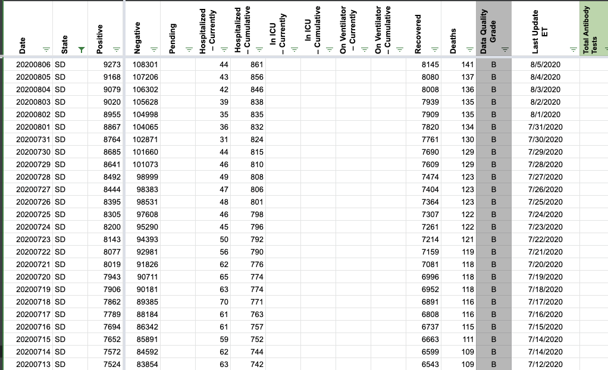
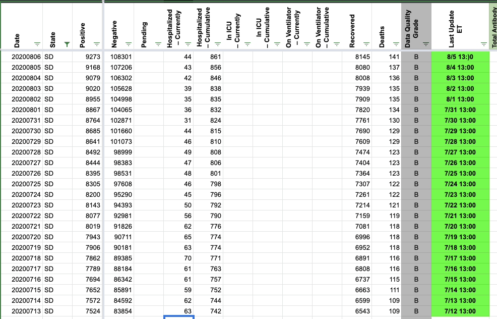

[SD] Patch Timestamps through 7/13 *Low Priority*
Issue number 724
hmhoffman opened this issue on August 2, 2020 at 3:11 pm
Labels Historical Data Backfill
Describe the Issue: On 8/2 it was discovered that SD has changed their data as of time to 13:00, we are now using previous day 13:00 as the timestamp. Before this change we were using previous day 17:00. This change was made on 7/13, so we should patch timestamps from 8/1 - 7/13 using previous day 13:00.
Data Source: https://doh.sd.gov/news/Coronavirus.aspx
brianskli added the label Backfill on August 4, 2020 at 7:41 am
brianskli added the label Historical Data on August 4, 2020 at 7:41 am
brianskli closed the issue on August 7, 2020 at 6:27 am
Timestamps were patched in States Daily in accordance with current practices.
Before:  After: 